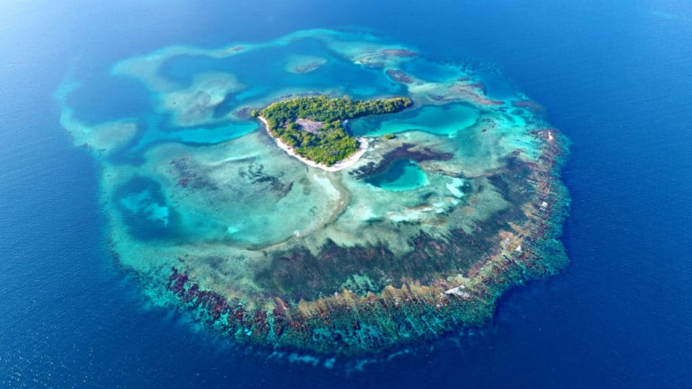
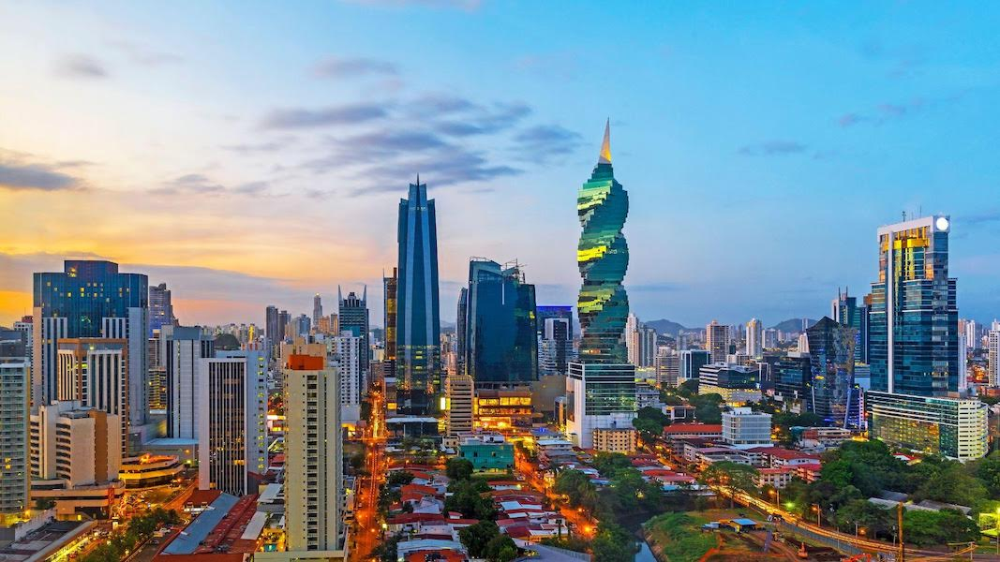
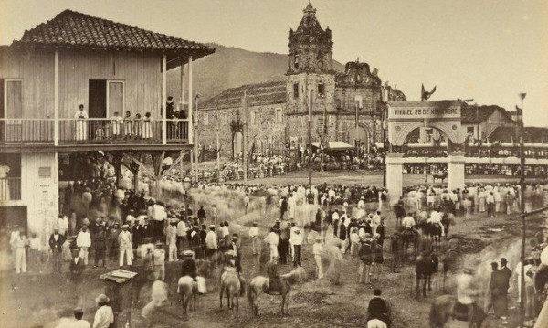

Lugares Turisticos
-
Archipiélago de San Blas
 -
Portobelo

-
Canal de Panamá

Panamá es un país soberano de América que esta ubicado en el extremo sureste de América Central que también es su subdivisión. Su nombre oficial es República de Panamá y su capital es la ciudad de Panamá. La república esta constituida por diez provincias y por seis comarcas indígenas.
Es el más conocido e importante de los símbolos patrios de la República de Panamá. Consiste en un rectángulo dividido en cuatro cuarteles: el superior izquierdo es una estrella azul de cinco puntas sobre fondo blanco; el superior derecho es de color rojo; el inferior izquierdo es de color azul; y el inferior derecho es una estrella roja de cinco puntas sobre fondo blanco.
El escudo de armas de la República de Panamá es el emblema heráldico que representa al país, y que junto con la bandera y el himno nacional, tiene la categoría de símbolo de la nación por mandato de la Ley
En los albores del siglo XV, Panamá fue el primer territorio que descubrió Cristóbal Colón. De hecho, una de las ciudades más importantes del país lleva su apellido y fundó una colonia en Isla Colón, la isla principal de Bocas del Toro. Desde Panama Ciudad, divisó Núñez de Balboa por primera vez el océano Pacífico.
En noviembre de 1821, las ansias de independencia que corrían por todo el continente alcanzaron a Panamá. El ejército español, consciente de que no podría frenar con las armas el sentimiento del pueblo panameño y de que el movimiento sería apoyado por las huestes de Simón Bolívar en caso de guerra, llegaron a un acuerdo de no agresión a la nueva nación istmeña, comandada por el general José Fábregas. No obstante, dada la inseguridad económica y la admiración por el Libertador Bolívar, Panamá decidió unirse a la Gran Colombia.
la superficie total de la República de Panamá en 75,517 km2 aproximadamente. En cuanto al mar territorial, el mismo se extiende a una zona de doce (12) millas marinas de longitud, con una superficie de 319,823.9 km2, superando el territorio insular.